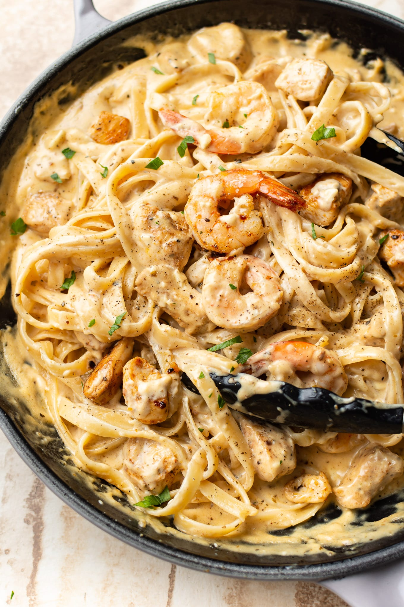

Cajun Chicken and Shrimp Alfredo

The best Chicken & Shrimp Alfredo
If you can't make up your mind whether you want shrimp or chicken,
this chicken and shrimp pasta is right up your alley.
😉 Why not do both?
Ingredients
- 8 ounces uncooked fettuccine
- 2 chicken breasts cut into 1" pieces
- 1/2 pound shrimp (I used 31/40 size) thawed & peeled
- 1/2 teaspoon garlic powder
- 1/2 tablespoon + 1/2 tablespoon Cajun seasoning (use a low or no salt variety)
- 2 tablespoons olive oil
- 2 tablespoons butter
- 1 cup heavy/whipping cream
- 4 ounces cream cheese (I used 1/2 block of Philly)
- 2 cloves garlic minced
- 1 cup freshly grated parmesan cheese
- Salt & pepper to taste
Steps
- Take the cream cheese out of the fridge 30+ minutes prior to starting the recipe (or microwave it for 20-30 seconds).
- Boil a salted pot of water for the pasta and cook it al dente according to package directions.
- If the shrimp are frozen, thaw them under cool running water. Peel them (leave tails on if you want). Pat shrimp dry. Cut the chicken into 1" pieces. Sprinkle the shrimp and chicken with the garlic powder and 1/2 tablespoon of Cajun seasoning.
- Add the oil to a deep skillet over medium-high heat, and once the pan is hot, cook the shrimp for about 3 minutes (flip once), then transfer them to a plate.
- Add the chicken to the skillet and cook for 5-6 minutes or until cooked through, stirring occasionally (let it brown a bit). Transfer it to the same plate as the shrimp.
- Take the skillet off the heat and add in the butter, cream, cream cheese, remaining 1/2 tablespoon of Cajun seasoning, and garlic. Return the pan to the stove (reduce heat to medium), and stir for a couple of minutes until the cream cheese has dissolved in the sauce.
- Let the sauce bubble gently for about 2-3 minutes, or until it's slightly thickened.
- Stir in the parmesan and then add the shrimp and chicken back to the pan. Let it warm through for a couple minutes. Season with extra salt & pepper as needed.
- I like to add a splash of hot pasta water (a tablespoon or two) to the skillet prior to draining the fettuccine to thin the sauce a little (optional). Toss the drained pasta with the sauce and serve immediately. I like to add a little more grated parmesan and some chopped parsley. A squeeze of lemon is delicious too!